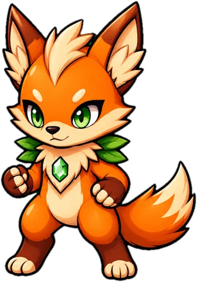

 GrassFight
GrassFightTap a stage to read its story.
Verdox is a small, bright orange fox kit with large amber eyes, a wide fluffy tail, and two small clusters of green leaves worn around its neck like a scarf. Its fur is vivid and warm even against the Amber Desert's pale sands, making it easy to spot across flat terrain - which it seems unbothered by, trotting openly in daylight rather than hiding. It collects small green things - seeds, leaves, dry grass blades - and tucks them against its chest beneath its leaf-scarf, never discarding them even when they crumble.
Field note: Verdox kits have been found carrying the same crumbled leaf-fragment for over a year; researchers believe it is a keepsake rather than food.
Amber Desert. Verdox and its family are found in the Amber Desert. See everyone who lives there.
Share a Bond Food that matches its types to become friends. Verdox loves:
A Bond Food is not a trick. It joins your spirit with the Kimuro's spirit, and only when it chooses you.
Print the Kimuro adventure packs: mazes, cards, a board game and Bond Mark medals.
See the printable packs